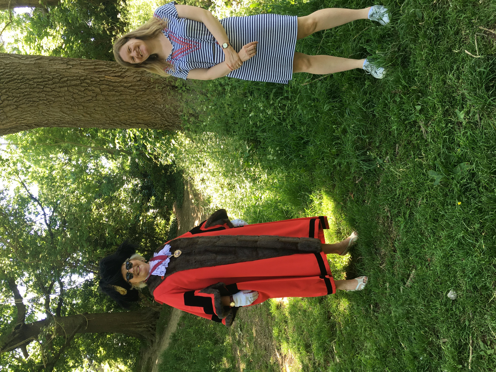

Emily SmithsonFlutter Developer |
|
 Showing the Lord Mayor of Bristol my Redland Green Tree Trail app |
I discovered Flutter in 2018 when it was still in Beta phase and I've been hooked ever since. I love the creativity and flexibility it allows you. I'm a former maths teacher so I love all things problem solving and I love to engage with people, especially through tech.
|